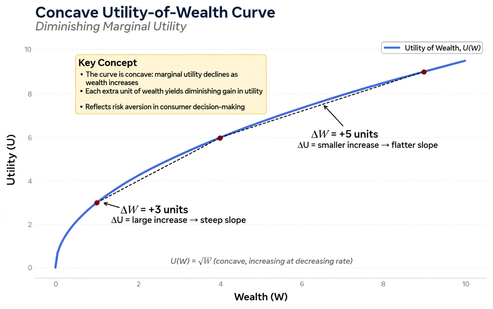

| Field | Decision theory, economics |
|---|---|
| Formalized by | John von Neumann and Oskar Morgenstern (1944) |
| Origin | Daniel Bernoulli (1738) |
| Key axioms | Completeness, transitivity, independence, continuity |

The expected utility hypothesis is a foundational concept in decision theory and economics which states that, when choosing among risky alternatives, a rational agent chooses the one with the highest expected utility — the probability-weighted sum of the utilities of all possible outcomes. Unlike expected value, expected utility accounts for the diminishing marginal utility of wealth.
The idea originated with Daniel Bernoulli's 1738 resolution of the St. Petersburg paradox, in which he proposed that the utility of money grows logarithmically rather than linearly. John von Neumann and Oskar Morgenstern axiomatized the theory in their 1944 Theory of Games and Economic Behavior, showing that any agent whose preferences satisfy four axioms (completeness, transitivity, independence, and continuity) behaves as if maximizing expected utility.
The curvature of the utility function determines risk attitude: concave utility implies risk aversion, linear utility risk neutrality, and convex utility risk seeking. Measures such as the Arrow–Pratt coefficient quantify the degree of risk aversion and underlie equilibrium asset pricing.
Experiments such as the Allais paradox (1953) and the Ellsberg paradox show systematic violations of the independence axiom. These findings motivated alternatives including prospect theory, which incorporates reference points, probability weighting and loss aversion, and rank-dependent utility models.
From Wikipedia, the free encyclopedia. Recreated from memory.